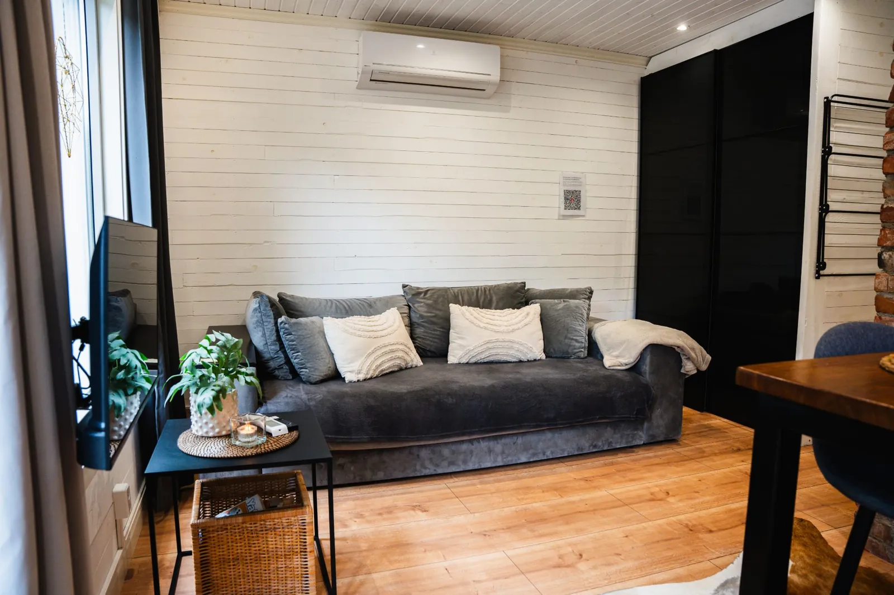
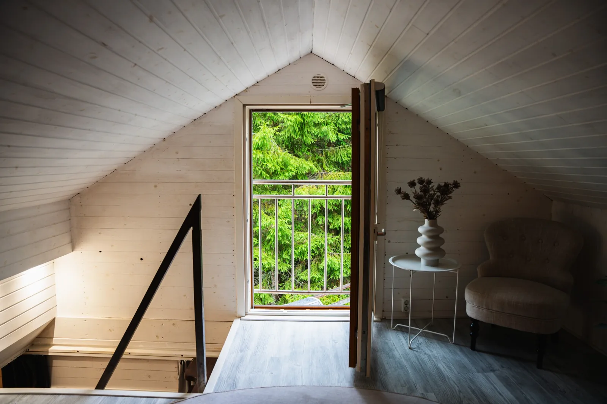
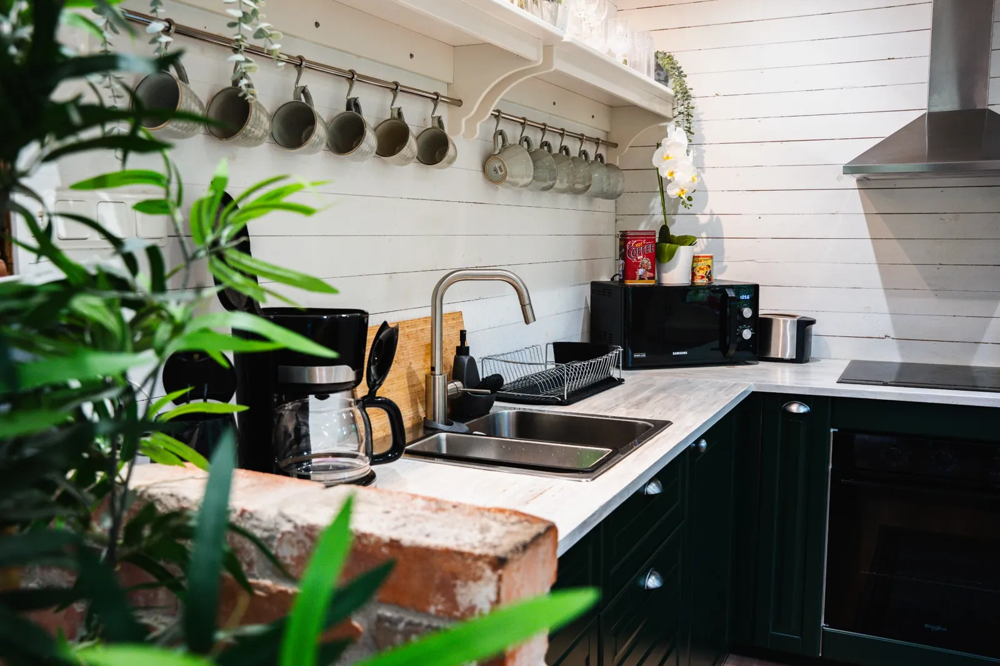

Detaljerad vy
Upptäck varje vrå av Pinebo Palace
Ulricehamn, Västergötland


En fristad där naturen sätter tempot
Pinebo Palace är ett ombonat gästhus på vår gård i skogen utanför Ulricehamn, precis vid en porlande bäck. Gästhuset ligger avskilt med egen ingång och en altan som vetter bort från vårt bostadshus. Börja morgonen med nybryggt kaffe på altanen, gå ut direkt i den grönmossiga skogen och avsluta kvällen i den vedeldade bastun eller det varma spabadet.
- Storlek
- 54 kvm
- Kapacitet
- Optimalt för 2 (max 4 gäster)
- Läge
- Avskilt gästhus vid en bäck
Bekvämligheter för en harmonisk vistelse
- Sovloft & bäddsoffaDubbelsäng på det ombonade sovloftet och bäddsoffa på nedervåningen – plats för upp till 4 gäster.
- Fullt utrustat kökSpishäll, ugn, kyl/frys och allt du behöver för goda middagar.
- Snabbt Wi‑FiFiberanslutning om du önskar jobba i lugn skogsmiljö.
- KlimatanläggningEffektiv luftvärmepump ger behaglig värme eller svalka.
- Eget källvattenFriskt, kallt och rent dricksvatten från egen djupborrad brunn.
- Dusch & WCBadrum med dusch, WC och rinnande varmvatten.
- HundvänligtInhägnad altan där hunden kan vara lös. Ej katter på grund av allergi.
- Husmanual & lokala tipsQR-kod och husmanual med våra bästa tips om området.
Praktisk information inför din ankomst
- Incheckning & utcheckning
- Incheckning kl. 15:00 | Utcheckning kl. 11:00. Personligt välkomnande när vi har möjlighet, annars självincheckning via nyckelskåp.
- Hundar
- Varmt välkomna – altanen är inhägnad. På gården ska hunden vara kopplad. Ej katter (allergi).
- Värdarna
- Vi bor i ett eget hus på samma gård. Gästhuset ligger avskilt med egen ingång och altan.
- Vägbeskrivning & parkering
- Gratis parkering för 2 bilar vid gästhuset. Boendet är lätt att hitta.
- Städning
- Följ vår städchecklista eller boka slutstädning för 800 kr.
- Sängkläder & handdukar
- Ta med egna eller hyr av oss för 250 kr.